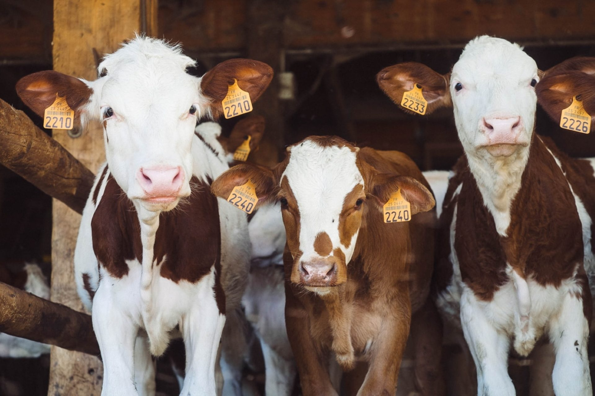

Производим доступные и высокоэффективные продукты ветеринарной фармацевтики и кормовые добавки для КРС, МРС, свиней и птицы. Отделы продаж для юридических лиц в Беларуси и России.
+375 29 761-77-01 · отдел продаж РБ
ООО «ЗападВетСервис» на протяжении многих лет сотрудничает с ведущими сельскохозяйственными предприятиями. Нашими специалистами разрабатываются авторские программы лечения и профилактики поголовья.
Наши потребители: традиционные животноводческие хозяйства, индустриальные комплексы, фермерские хозяйства.
Выпуск только высококачественных ветеринарных препаратов и кормовых добавок.
Быстрая разработка новейших лекарственных форм и вывод их на рынок.
Удовлетворение срочных заказов покупателей.
Подбор, разработка и применение схем лечения.
Оставьте заявку на сайте или позвоните в отдел продаж РБ или РФ.
Менеджер сообщит цену и наличие препаратов, поможет с подбором.
[условия оплаты и доставки — уточнить у клиента]
Оставьте контакты — менеджер отдела продаж свяжется и сообщит цену и наличие. Или позвоните: +375 29 761-77-01 (РБ), +375 29 662-73-75 (РФ).